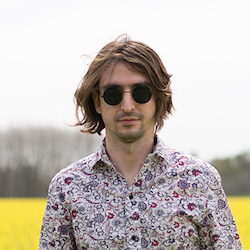

GALERÍA
{kind=link}

{kind=link}
Nicolás Lisanti

Max Sar Fernández
Max Sar Fernández
The Aberdeens es una banda de rock alternativo formada en la provincia de Buenos Aires hacia finales del año 2010, integrada por Nicolás Lisanti (guitarra y voz), Sebastián Avila (bajo) y Max Sar Fernández (batería y coros).
Rápidamente comienzan a dar conciertos en distintos lugares de la provincia de Buenos Aires y Capital Federal, llegando a compartir escenario con bandas como Massacre, Juana la loca, Fantasmagoria, Jordan, Utopians, Superuva, Francisco Bochaton, entre otras.
Al mismo tiempo comenzaron a trabajar en lo que sería su disco debut, el cual vio luz en febrero del 2013; lo titulan “Los años perdidos” y contiene 12 temas, de los cuales algunos están compuestos en inglés y otros en castellano. El disco fue editado de manera independiente y con apoyo de la UMI. Del mismo desprenden dos videos oficiales de los cortes “I Wanna Be Alone” y “Dejame Soñar”.
La banda cuenta con un sonido que va desde un rock pop británico, tomando influencias del grunge y el indie, hasta el rock contemporáneo. Actualmente se encuentran promocionando el sucesor de “Los Años Perdidos”, su segundo disco llamado “Mundo de Colores”, compuesto completamente en castellano, con diez canciones y que fue lanzado de manera digital y se encuentra disponibles en Spotify, Apple Music, Google Play, Deezer, BandCamp, etc; mientras se siguen presentando en vivo y difundiendo el material.
También podés escuchar nuestra música en Spotify, iTunes, BandCamp, Deezer, YouTube. Hacé clic y agreganos a tu lista de reproducción!


Estamos preparando nuevo contenido para este 2016 mientras diagramamos shows para seguir presentando nuestro reciente trabajo de estudio: "Mundo De Colores".
Estaremos presentando tocando temas en formato acústico de nuestro nuevo disco "Mundo de Colores".